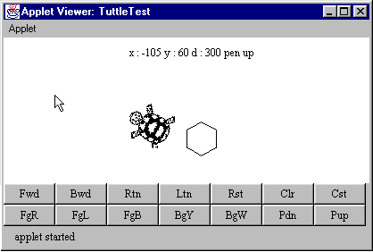
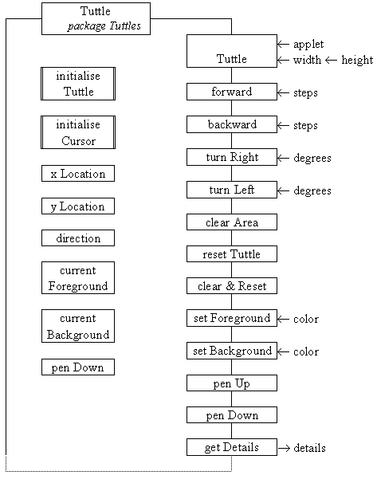
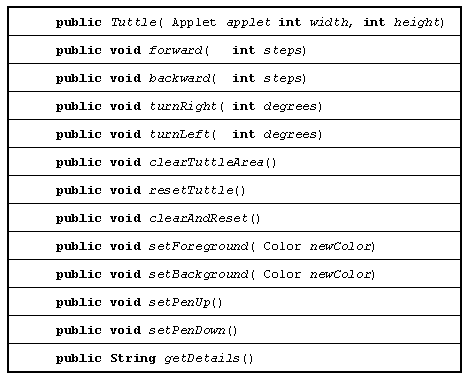

4.2 The
Graphics and Color classes
4.2 The
Graphics and Color classes
 Chapter 4 Drawing and Image processing with Java -
the Tuttle class
Chapter 4 Drawing and Image processing with Java -
the Tuttle class
Figure 4.1 shows an instance of the Tuttle class contained within a very simple demonstration harness, which will be introduced at the end of this chapter. The harness supplies the text buttons at the bottom of the application and reports the status of the Tuttle at the top.

Figure 4.1 The Tuttle
class within a simple user interface harness
(with the drawing area reduced in height).
The feedback area at the top of the screen indicates that the tuttle it is at x location 105, y location 60, heading in direction 300 and that its pen is up. The origin ( 0,0 ) of the tuttle's frame of reference is the centre of the screen and direction 0 indicates that it is heading directly towards the top of the screen. The screen is always 1000 tuttle steps wide and 1000 tuttle steps high, no matter what the physical size of the screen might be.
Directions are measured in degrees and increase as the tuttle rotates clockwise, so that a direction of 90o would indicate that the tuttle is heading directly towards the right of the screen. The representation of the tuttle changes to indicate the direction in which it is heading and its color also changes to indicate what color trail will be left when its pen is down. The hexagon beside the tuttle was constructed by telling the tuttle to move forwards and turn right by 60o, six times; its pen was then raised and the tuttle moved clear of the hexagon before the image was produced.
The Tuttle class diagram is given in Figure 4.2.

Figure 4.2 The Tuttle class diagram.
A Tuttle instance has six obvious data attributes: the tuttle's xLocation, yLocation and its direction on the screen, the currentForeground and currentBackground color and its penDown, either true or false. There are a number of other attributes within the class which will be described in detail below. There are also a number of other methods, as suggested by the dotted lines at the bottom of the diagram, which will be introduced in Chapter 8.
The constructor creates a new Tuttle centred within an area whose physical width and height are as specified in its arguments. It also requires the identity of the applet which it is executing within, for reasons which will be explained below. The creation of a Tuttle also includes calls of the two private methods initialiseTuttle() and intitialiseCursor(), as will be described below.
The remaining methods are all concerned with the Tuttle's essential actions. The forward() and backward() methods move the tuttle the number of tuttle steps specified in its current direction, unless this would take it outside its area in which case it is not moved. The steps are expressed in terms of the Tuttle's virtual size which is always 1000 by 1000 steps and not in terms of its physical size determined by its constructor.
The turnRight() and turnLeft() methods rotate the tuttle clockwise and anti-clockwise respectively, the argument indicating the number of degrees to turn. The tuttle cursor will be always rotated to indicate the direction in which the tuttle will move forwards. The clearArea() method will clear all drawings from the tuttle's drawing area by filling it with the current background color, leaving the tuttle with its current location and direction. The reset() method will move the tuttle back to the centre of the screen (0, 0) and set its direction to 0, without disturbing the contents of the screen. The clearAndReset() method will combine the clearArea() and reset() methods to fully restore the initial state.
The setForeground() and setBackground() methods change the color of the tuttle and of its drawing area respectively. When the setForeground() method is called the color of the tuttle cursor will change to indicate the color which it will draw with. When the setBackground() method is called any parts of the drawing shown in the old background color will be changed to the new background color. The penUp() and penDown() methods cause the tuttle to leave, or not to leave, a trail as it moves. The final method, getDetails(), returns a string of the form "x: nnn y: nnn d: nnn pen {up/ down}"; that is the virtual x and y location and the direction and the state of the pen, either up or down, as shown at the top of Figure 4.1.
The prototypes of the methods which are of interest to a client, which needs only to control a Tuttle, are given in Table 4.1.

Table 4.1 Public methods of the Tuttle class which are of interest to a client.
4.2 The Graphics and Color classes
Chapter 4 Drawing and Image processing with Java - the Tuttle class